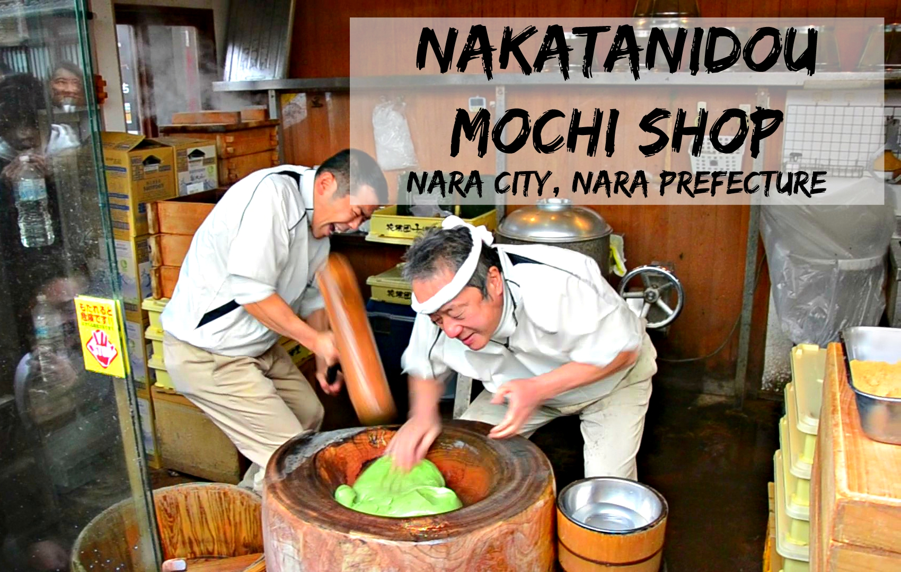
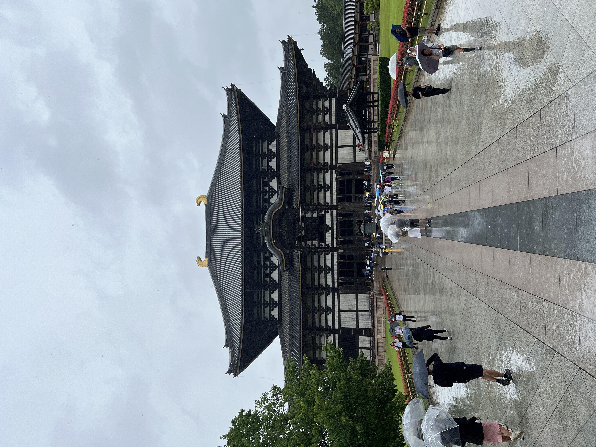
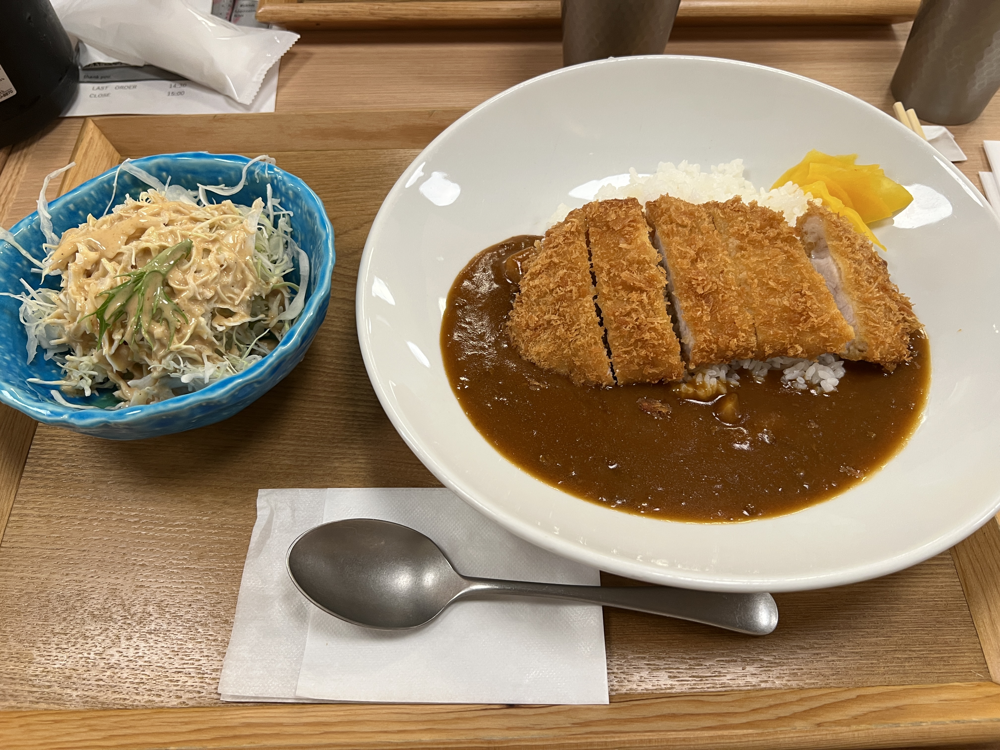

1. Parc de Nara
La ville de Nara est très connue pour son parc de daims où ces derniers sont en circulation libre dans le parc. Vous verrez qu’il y en a énormément et vous pourrez également les nourrir avec des sortes de biscuits ronds mais attention à ne pas les montrer devant une horde de daims, vous allez subir une invasion de ces derniers, fuyez !
Je vous recommande de ne pas nourrir les daims à l’entrée du parc de 1, parce qu’il y a beaucoup trop de touristes et que les daims n’ont plus forcément faim pour que vous puissiez les nourrir et de 2 il est préférable d’aller plus loin dans le parc afin de les nourrir tranquillement dans un cadre plus agréable que d’être avec une foule d’humains et de daims lol.
Le temps d’une demi-journée suffit largement pour visiter le parc Nara, je vous conseille de ne pas passer plus de temps ici car vous ne verrez rien d’autres à part des daims. J’ai personnellement pu passer à une autre ville pour l’autre moitié de la journée à Uji, la ville du matcha !
Ça c’est moi en train de faire une réf à un anime, si vous l’avez, vous êtes juste le goat.
2. Nakatanidou (pour les daifuku)
On le présente plus, si je suis venu à Nara c’est pour ça aussi. Vidéo très virale qui a fait le tour du monde, c’est un magasin célèbre pour ses mochis ou plus communément appelés daifukus là-bas, ils sont faits sur place et sont vendus dans les minutes qui suivent donc c’est tout chaud et super bon !
On peut voir par occasion le célèbre et grand chef des mochis frapper la pâte avec son collègue devant nous, ses clients en risquant de se casser la main par le marteau mais c’est un vrai dur à cuire, ça n’arrive jamais aux maîtres mochis ha ha.
Alors par contre, il n’est pas toujours là mais sur leur vitrine, ils indiquent l’heure de démonstration du chef, nous étions arrivés à 11h48 et l’affiche indiquait que la prochaine session était à 12h30 donc je pense qu’il y a une heure de pause au moins avant chaque démonstration. Je croise très fort les doigts pour que vous puissiez les voir en action quand vous y serez sur place !
Les mochis coûtent 180 yens l’unité, donc à peine 1€10 pour la qualité du mochi, ça vaut vraiment le coup d’essayer ! Je vous assure que ce n’est clairement pas un mochi que vous avez l’habitude de manger en France, sa pâte est super moelleuse, c’est vraiment mou qu’on a l’impression de l’aplatir avec nos mains ! De plus, je trouve que l’intérieur du mochi est bien plus garni de pâte d’haricot rouge que ceux qu’on a en France !
Adresse : 29 Hashimotocho, Nara, 630-8217, Japon
3. Todai-ji Temple
Le Tōdai-ji est l’un des temples les plus impressionnants du Japon, et clairement l’incontournable de Nara. Son immense pavillon principal, le Daibutsuden, abrite une statue géante de Bouddha en bronze (15 mètres de haut !), qui laisse sans voix dès qu’on entre. Rien que l’échelle du bâtiment est impressionnante : c’est l’un des plus grands édifices en bois du monde.
Le temple est entouré du parc de Nara, où les fameux cerfs sacrés se baladent librement. Ils n’hésitent pas à venir quémander des biscuits (shika senbei) vendus sur place, parfois avec un peu d’insistance !
La visite combine spiritualité, architecture et ambiance unique, avec un mélange de majesté et de légèreté grâce aux cerfs. Compte environ une demi-journée pour vraiment profiter du lieu et de ses alentours.
Il y a une activité que j’ai adoré là-bas, c’est le fait de pouvoir personnaliser des médaillons à l’effigie du temple en y gravant vos noms dessus ! C’est un super souvenir personnalisable pour vous ou pour vos proches ou amis !
Astuce pratique : arrive tôt le matin pour éviter la foule (surtout les cars de touristes) et profiter d’une atmosphère plus paisible.
Adresse : 406-1 Zōshichō, Nara, 630-8587, Japon
4. Tonkatsu Ganko
Si tu as envie d’un vrai tonkatsu (côtelette de porc panée et frite), alors là, un seul mot d’ordre : FONCEZ !!! C’est selon moi, le deuxième meilleur restaurant de curry que j’ai mangé de ma vie et pour le prix que c’est (c’est-à-dire vraiment pas cher par rapport en France), c’est vraiment succulent !
C’est une petite chaîne connue dans le Kansai, réputée pour ses portions généreuses et sa panure croustillante. Le plat est généralement servi avec du riz, de la soupe miso, du chou émincé à volonté et des sauces maison bien savoureuses.
C’est l’adresse parfaite pour un déjeuner consistant après une matinée de visite. Les prix restent raisonnables (autour de 1 200 à 2 000 ¥ le menu), et l’ambiance est simple et conviviale. Le genre de resto fréquenté par autant de locaux que de voyageurs.
Adresse : 19 Higashimuki Nakamachi, Nara, 630-8215, Japon